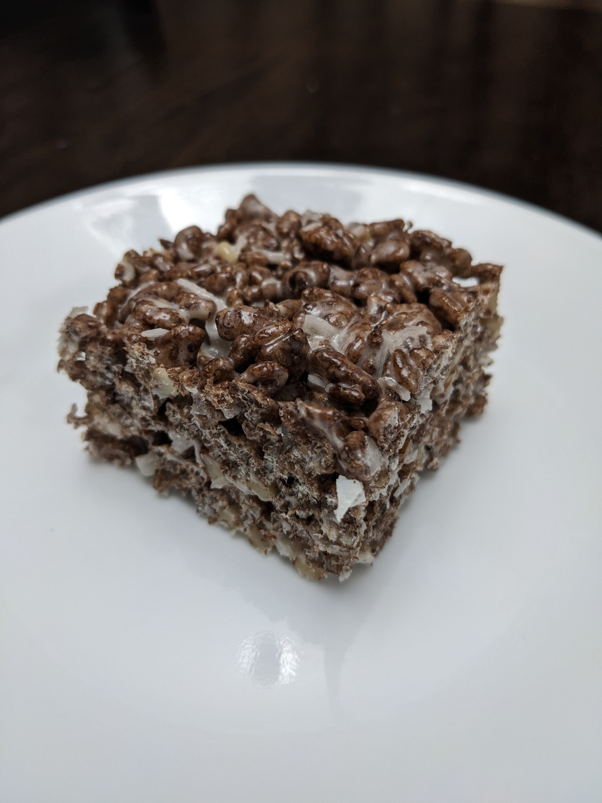

German Chocolate Marshmallow Crispy Treat
A fun twist on a classic dessert.
Ingredients
5 1/2 cups chocolate flavored crispy rice cereal
1/2 cup crushed pecans
1/2 cup shredded coconut
3 tbsp butter + extra to coat dish
Instructions
Spray or rub butter on bottom and sides of rectangular glass serving dish.
In microwave-safe bowl, melt 3 tbsp of butter.
Add marshmallows, stir/toss to coat in melted butter.
Microwave 30 seconds at a time until marshmallows are melted.
Add all dry ingredients immediately. Stir to coat thoroughly.
Pour mixture into serving dish and press firmly to even out.
Let rest for about 20 minutes.
Enjoy!
